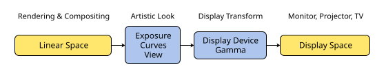
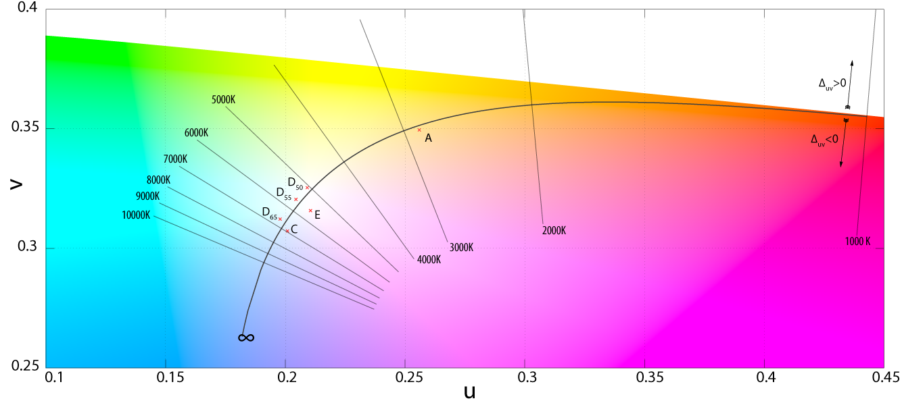

Displays và Views¶
Tổng quan¶
Để hiển thị một hình ảnh, nó phải được chuyển từ scene linear sang một display color space. Việc này liên quan đến cả lựa chọn kỹ thuật lẫn nghệ thuật.
Lựa chọn kỹ thuật về display color space phụ thuộc vào thiết bị hiển thị đích và khả năng của nó. sRGB dùng được cho mọi màn hình máy tính, nhưng có thể chọn khác nhau cho rạp chiếu số, TV HD, và máy tính hỗ trợ wide gamut hoặc HDR.
Vì các thiết bị hiển thị không thể hiển thị đầy đủ phổ màu và chỉ có độ sáng giới hạn, màu sắc phải được điều chỉnh cho vừa với gamut của thiết bị. Blender có nhiều lựa chọn view, mỗi view cho một vẻ ngoài khác nhau.
Các lựa chọn nghệ thuật sâu hơn có thể được thực hiện với các cài đặt color management như exposure và white balance, cũng như color grading trong compositor. .


Quá trình chuyển đổi từ linear sang không gian của thiết bị hiển thị.¶
Displays¶
Color space của màn hình mà hình ảnh và video đang được tạo ra cho nó.
Các màn hình máy tính thông thường hỗ trợ sRGB, và phần lớn hình ảnh cùng video được lưu trong color space này. Tuy nhiên, các màn hình hiện đại thường hỗ trợ dải màu rộng hơn và nội dung high dynamic range.
- Standard Dynamic Range (SDR)
- sRGB:
Loại display cơ bản, được hỗ trợ ở mọi nơi.
- Display P3:
Dải màu rộng cho các thiết bị Apple và các màn hình hiện đại khác.
- Rec.1886:
Được nhiều TV đời cũ sử dụng.
- Rec.2020:
Dải màu còn rộng hơn P3, được một số màn hình hỗ trợ.
- High Dynamic Range (HDR)
- Rec.2100 PQ:
Dành cho màn hình HDR với dải màu rộng Rec.2020, lên đến 10000 nits.
- Rec.2100 HLG:
Dành cho TV HDR với dải màu rộng Rec.2020, lên đến 1000 nits.
Wide Gamut¶
Chọn display "Display P3" hoặc "Rec.2020" để xem các màu wide gamut.
Cài đặt này nên được dùng cùng với working space "ACEScg" hoặc "Linear Rec.2020" cho material, light, rendering và compositing.
Xem Cấu hình Hệ thống để biết cách bật màu wide gamut trên các hệ thống được hỗ trợ.
High Dynamic Range¶
Chọn display "Rec.2100 PQ" hoặc "Rec.2100 HLG" để xem các màu high dynamic range (HDR).
Với standard dynamic range (SDR), các view phải hạ thấp đáng kể các màu sáng để vừa trong khoảng dải. Với high dynamic range, có thể vượt qua giới hạn đó và hiển thị scene chính xác hơn. Màn hình HDR cũng có giới hạn, và có các view riêng cho 500, 1000, 2000 và 4000 nits nhằm nhắm tới các màn hình có độ sáng tối đa khác nhau.
Trong Blender, nội dung HDR tự động co giãn theo độ sáng của màn hình. Để thấy được toàn bộ dải, thường phải hạ độ sáng màn hình xuống, tạo đủ khoảng chênh (headroom) trên mức trắng SDR.
Xem Cấu hình Hệ thống để biết cách bật màu HDR trên các hệ thống được hỗ trợ.
Display Emulation¶
Xem Display Emulation để biết chi tiết về cách Blender tương tác với color management của hệ điều hành.
Views¶
Đây là các cách khác nhau để xem hình ảnh trên cùng một display.
- Standard:
Không thực hiện phép chuyển đổi bổ sung nào ngoài phép chuyển đổi cho display. Thường được dùng cho kết quả phi-photorealistic hoặc dựng phim, nơi một vẻ ngoài cụ thể đã được nung sẵn vào video đầu vào.
- ACES 1.3:
Các view transform của ACES, một chuẩn được dùng rộng rãi trong sản xuất phim và truyền hình. Phù hợp cho kết quả photorealistic.
- ACES 2.0:
Phiên bản 2.0 của view transform ACES, với vẻ ngoài trung tính hơn. Nó có tone scale bớt gắt, giảm tương phản ở tông giữa, rolloff vùng sáng dịu hơn, và cải thiện gamut mapping.
- Khronos PBR Neutral:
Một tone mapping transform được thiết kế riêng cho độ chính xác màu PBR, để các màu sRGB trong bản render đầu ra khớp càng trung thành càng tốt với base color sRGB đầu vào trong material, dưới ánh sáng thang xám. Đây là hướng tới các trường hợp nhiếp ảnh sản phẩm, nơi scene được expose tốt và các giá trị màu HDR phần lớn bị giới hạn trong các điểm specular highlight nhỏ.
- AgX:
Một tone mapping transform cải tiến từ Filmic, cho kết quả photorealistic hơn. AgX cung cấp dải động 16.5 stop và giảm bão hòa các màu bị expose quá cao để mô phỏng phản ứng tự nhiên của phim với ánh sáng.
- Filmic:
Một tone mapping transform được thiết kế để xử lý các màu high dynamic range. Filmic đã lỗi thời và được thay thế bởi AgX với khả năng xử lý màu bão hòa tốt hơn.
- Filmic Log:
Chuyển đổi sang color space log của Filmic. Cái này có thể dùng để xuất sang các ứng dụng color grading, hoặc để khảo sát hình ảnh bằng cách làm phẳng các vùng rất tối và rất sáng.
- False Color:
Hiển thị bản đồ nhiệt của cường độ hình ảnh, để trực quan hóa dải động, và giúp expose hình ảnh đúng cách.
Dưới đây là bảng biểu diễn cách dữ liệu màu tuyến tính đã chuẩn hóa được thể hiện với False Color.
Giá trị độ sáng (Luminance)
Color
Low Clip
Đen
0.0001% đến 0.05%
Blue
0.05% đến 0.5%
Xanh dương - Lục lam
0.5% đến 5%
Lục lam
5% đến 16%
Xanh lá - Lục lam
16% đến 22%
Xám
22% đến 35%
Xanh lá - Vàng
35% đến 55%
Yellow
55% đến 80%
Cam
80% đến 97%
Red
High Clip
White
- Raw:
Dùng để khảo sát hình ảnh chứ không dành cho xuất bản cuối. Raw cho hình ảnh mà không qua bất kỳ phép chuyển đổi color space nào.
Look¶
Chọn một hiệu ứng nghệ thuật từ một bộ dữ liệu phản ứng phim đã đo lường, mô phỏng gần đúng vẻ ngoài của một số loại phim. Được áp dụng trước phép chuyển đổi color space.
Exposure¶
Dùng để kiểm soát độ sáng của hình ảnh (tính bằng stop) được áp dụng trước phép chuyển đổi color space. Nó được tính như sau: \(output\_value = render\_value × 2^{(exposure)}\)
Gamma¶
Phép hiệu chỉnh gamma bổ sung được áp dụng sau phép chuyển đổi color space. Lưu ý rằng các display transform mặc định đã thực hiện phép chuyển đổi phù hợp, nên phần này chủ yếu đóng vai trò một hiệu ứng thêm cho các tinh chỉnh nghệ thuật.
Curves¶
Điều chỉnh RGB Curves để kiểm soát màu của hình ảnh trước phép chuyển đổi color space. Đọc thêm về cách dùng Widget Curve.
White Balance¶
Điều chỉnh các màu sao cho một điểm trắng cho trước (biểu diễn bằng nhiệt độ màu và tint) trở thành màu trắng trên display.
Thay cho việc tự nhập thủ công các giá trị, còn có một color picker. Khi một màu được chọn, nhiệt độ và tint sẽ được đặt sao cho màu này cân bằng về trắng. Cách này chỉ hoạt động nếu màu đủ gần với một bộ phát vật đen (blackbody).
Cân bằng trắng cũng có thể được thực hiện như một phần của pipeline compositing bằng cách dùng Color Balance Node
- Temperature
Nhiệt độ vật đen của nguồn sáng chính. Mặc định dùng điểm trắng D65.
- Tint
Mức độ dịch chuyển xanh lá/đỏ cánh sen của đường cong vật đen.

Đường cong nhiệt độ vật đen.¶
Images¶
Display¶
Theo mặc định, chỉ có các bản render mới được hiển thị và lưu cùng với View của render được áp dụng. Đó là các data-block hình ảnh "Render Result" và "Viewer", cùng các file được lưu trực tiếp ra đĩa bằng toán tử Render Animation. Tuy nhiên, khi tải một bản render được lưu trong một file OpenEXR trung gian, Blender không thể tự động nhận ra đây là một bản render (nó có thể là ví dụ một image texture hay displacement map). Chúng ta cần chỉ định rằng đây là một bản render và rằng ta muốn áp dụng các phép biến đổi, bằng các cài đặt sau.
- View as Render
Hiển thị data-block hình ảnh (không chỉ riêng bản render) cùng với view, exposure, gamma, RGB curve được áp dụng. Hữu ích để xem các frame đã render trong file OpenEXR tuyến tính giống như khi render chúng trực tiếp.
Output¶
Đối với việc lưu file, cũng tồn tại một tùy chọn tương đương.
- Save as Render
Tùy chọn trong toán tử lưu hình ảnh để áp dụng view, exposure, gamma, RGB curve. Cái này hữu ích để lưu OpenEXR tuyến tính thành ví dụ file PNG hoặc JPEG trong display space.
Các hình ảnh wide gamut có thể được ghi theo các định dạng file sau: PNG, JPEG, WebP, AVIF, TIFF và JPEG 2000.
Hình ảnh HDR có thể được ghi thành file AVIF hoặc PNG. Chúng được ghi với trắng khuếch tán 203 nits để khớp với quy ước trong phần lớn trình duyệt và trình xem ảnh.
Video¶
Output¶
Video có thể được render với cả color space wide gamut lẫn HDR. Chúng dùng display của scene theo mặc định, nhưng cũng có thể được gán một color space khác bằng cách ghi đè các cài đặt color management trong output properties.
Việc lưu video HDR có thêm một vài yêu cầu:
Đặt display của color management thành Rec.2100 PQ hoặc HLG
Đặt codec thành H.265 hoặc AV1
Đặt bit depth thành 10 hoặc 12
Các trình phát video và thiết bị có mức hỗ trợ khác nhau cho video HDR. Bit depth 10 với mã hóa PQ là lựa chọn mặc định tốt để tối đa hóa khả năng tương thích.
Video HDR được ghi với trắng khuếch tán 100 nits, để khớp với quy ước trong phần lớn trình phát video và trình duyệt.